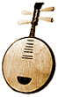

Yang Chin:  Китайская разновидность цимбал, сегодня один из основных оркестровых инструментов. Звук извлекают двумя бамбуковыми палочками. Клапаны используют, чтобы обеспечить полутона и расширить диапазон, движки и ролики делают возможной модуляцию и облегчают быструю и точную настройку.Yuet Chin: Щипковый 3х струнный ладовый инструмент из Китая, также называемый «Лунная Гитара». |